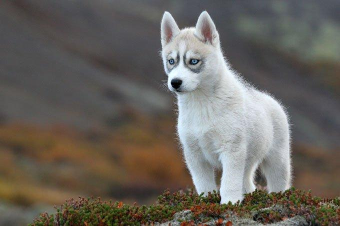
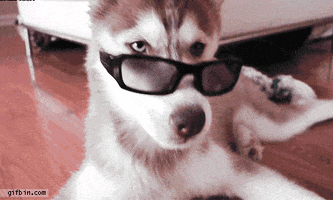

El husky siberiano, es la raza de perros más utilizada en el mundo para las carreras de trineos, pero también es muy popular como perro de compañía gracias a su carácter alegre y dócil. Es un perro estéticamente admirable. El Husky siberiano es reconocido en todo el mundo, incluso en España,Argentina, Uruguay, Chile y México donde cuenta con mucha admiración, es realmente bonito y por eso es considerado uno de los perros más bellos del mundo.
Origen Esta raza ya la empleaban los chukchis, un pueblo paleosiberiano del río Kolyma (Siberia) en el siglo XIX. El carácter noble de esta raza podría atribuirse probablemente al magnífico cuidado que recibió por parte de los chukchis. Como los trineos de perros eran el medio de transporte principal, los huskies eran de una importancia vital para los nativos. Los primeros huskies siberianos llegaron a Alaska a principios del siglo XX, donde se les sigue conociendo como chukchis. Las carreras de trineos se volvieron populares y la velocidad de esta raza asombraba y servía de inspiración para los perros de carreras de Estados Unidos. Fue entonces cuando los norteamericanos renombraron a este perro y lo llamaron husky siberiano.
Personalidad Esta raza es muy conocida por su buen carácter y por ser muy cariñosa con la gente, por lo que no son perros guardianes por naturaleza. Les encanta y necesitan estar acompañados y no deberán quedarse solos durante mucho tiempo, ya que puedalternateen volverse muy destructivos. Les gusta estar con otros perros bien adiestrados, aunque son cazadores ágiles y eficientes, por lo que deberán adiestrarse con cuidado para que puedan estar en contacto con otros animales domésticos. Aunque no suelen ladrar, sí que aúllan, a veces solo por el simple placer de hacerlo.
